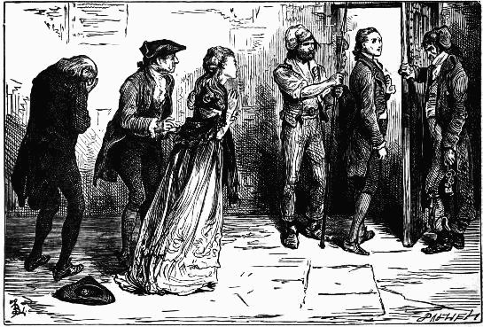
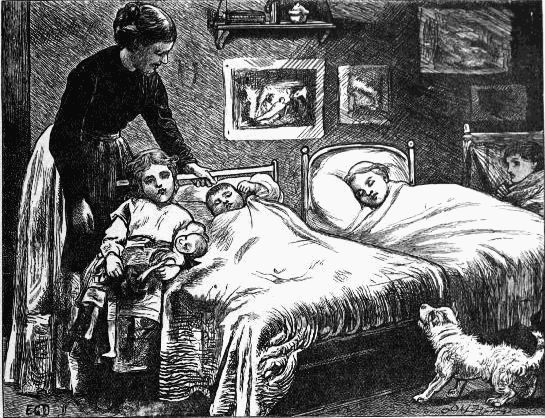
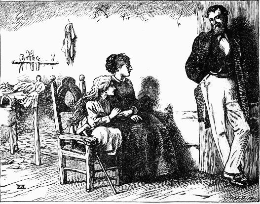
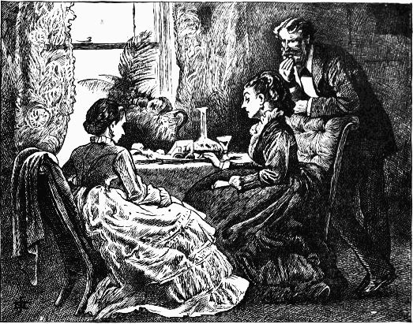
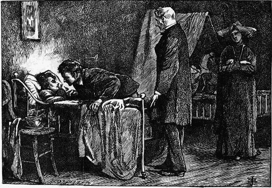

TWENTY-FIVE ILLUSTRATIONS
BY FRED BARNARD
Miss Manette curtsied to Mr. Lorry, with a pretty desire to convey to him that she felt how much older and wiser he was than she. He made her another bow—Book 1, Chap. iv.
The wine shop—Book 1, chap. v.
The shoemaker—Book 1, chap. vi.
Messrs. Cruncher and Son—Book 2, chap. i.
And smoothing her rich hair with as much pride as she could possibly have taken in her own hair if she had been the vainest and handsomest of women—Book 2, chap. vi.
The lion and the jackal—Book 2, chap. v.
He stooped a little, and with his tattered blue cap pointed under the carriage. All his fellows stooped to look under the carriage—Book 2, chap. viii.
Drive him fast from the tomb. This from Jacques—Book 2, chap. ix.
"Think now and then that there is a man who would give his life to keep a life you love beside you"—Book 2, chap. xiii.
"It is frightful, messieurs. How can the women and children draw water? Who can gossip of an evening under that shadow?"—Book 2, chap. xv.
Saint Antoine—Book 2, chap. xvi.
"Still, the doctor, with shaded forehead, beat his foot nervously on the ground"—Book 2, chap. xix.
Dragged, and struck at, and stifled by the bunches of grass and straw that were thrust into his face by hundreds of hands—Book 2, chap. xxii.
Among the talkers was Stryver, of the King's Bench Bar . . . broaching to monseigneur his devices for blowing the people up, and exterminating them from the face of the earth.—Book 2, chap. xxiv.
Some registers were lying open on a desk and an officer of a coarse dark aspect presided over these—Book 3, chap. i.
The Grindstone—Book 3, chap. ii.
The Carmagnole—Book 3, chap. vi.
Here Mr. Lorry became aware, from where he sat, of a most remarkable goblin shadow on the wall—Book 3, chap. x.
Twice he put his hand to the wound in his breast, and with his forefinger drew a cross in the air—Book 3, chap. x.
The trial of Evrémonde—Book 3, chap. ix.
As he was drawn away, his wife released him, and stood looking after him with her hands touching one another in the attitude of prayer—Book 3, chap. xi. 
His head and throat were bare, and, as he spoke with helpless look straying all round, he took his coat off, and let it drop on the floor—Book 3, chap. xii.
"You might, from your appearance, be the wife of Lucifer," said Miss Pross in her breathing. "Nevertheless you shall not get the better of me. I am an Englishwoman"—Book 3, chap. xiv.
The third tumbrel—Book 3, chap. xv.
TWENTY-SIX ILLUSTRATIONS
BY E. G. DALZIEL
Saw from the ladder's elevation, as he looked down by chance towards the shore, some dark, troubled object close in with the land—The Shipwreck
A cheap theatre, Sunday night—Two Views of a Cheap Theatre
Stood a creature remotely in the likeness of a young man, with puffed, sallow face, and a figure all dirty and shiny and slimy, who may have been the youngest son of his filthy old father, Thames—Wapping Workhouse
Mr. Grazinglands looked into a pastrycook's window, hesitating as to the expediency of lunching at that establishment—Refreshments for Travellers
"Bags to hold your money," says the witch, shaking her head and setting her teeth; "you as has got it"—Poor Mercantile Jack
The tall glazed head-dress of his warrior Straudenheim instantly knocked off—Travelling Abroad
He was taken into custody by the police—Shy Neighbourhoods
"Drop of something to drink," interposed the stranger. "I am agreeable"—Chambers
"'Then you're a tramp,' he ses. 'I'd rather be that than a beadle,' I ses"—Tramps
"Am I red to-night?" "You are," he uncompromisingly answered—Night Walks
"A lemon has pips, and a yard has ships, and I'll have chips!"—Nurses' Stories
The wind blows stiffly from the nor'-east . . . and the shapeless passengers lie about in melancholy bundles—The Calais Night Mail
Then dropped upon her knees before us, with protestations that we were right—Some Recollections of Mortality
On the starboard side of the ship a grizzled man dictated a long letter to another grizzled man in an immense fur cap—Bound for the Great Salt Lake
Blinking old men who are let out of the workhouse by the hour have a tendency to sit on bits of coping stone in these churchyards . . . the more depressed class of beggars too bring hither broken meals, and munch—The City of the Absent
Mr. J. Mellows, of the "Dolphin's Head"—An old Stage-coaching House
Building h.m.s. Achilles—Chatham Dockyard
At the station they had been sitting about in their threadbare homespun garments . . . sad enough at heart, most of them—In the French-Flemish Country
It was agreed that Mr. Battens "ought to take it up," and Mr. Battens was communicated with on the subject—Titbull's Almshouses
 At the upper end of this dungeon . . . the Englishman first beheld him, sitting on an iron bedstead, to which he was chained by a heavy chain—The Italian Prisoner
At the upper end of this dungeon . . . the Englishman first beheld him, sitting on an iron bedstead, to which he was chained by a heavy chain—The Italian Prisoner
Trotting about among the beds, on familiar terms with all the patients, was a comical mongrel dog called Poodles—A Small Star in the East 
Over the grog, mixed in a bucket, presides the boatswain's mate—Aboard Ship
This engaging figure approached the fatal lamps—Mr. Barlow
Look at this group at a street corner—The Ruffian
And White Riding Hood was fined ten shillings—The Ruffian
[480]
[481]
THIRTY ILLUSTRATIONS
BY F. A. FRASER
"Hold your noise!" cried a horrible voice . . . "keep still, you little devil, or I'll cut your throat"—Chap. i.
The sergeant ran in first—Chap. v.
"Why, here's a J!" said Joe, "and a O equal to anythink!"—Chap. vii.
She gave a contemptuous toss . . . and left me—Chap. viii.
He said, "Aha! Would you!" and began dancing backwards and forwards—Chap. xi.
 "Well, Pip, you know, . . . you yourself see me put 'em in my 'at, and therefore you know as they are here"—Chap. xiii.
"Well, Pip, you know, . . . you yourself see me put 'em in my 'at, and therefore you know as they are here"—Chap. xiii.
Orlick . . . was very soon among the coal-dust, and in no hurry to come out of it—Chap. xv.
Then she softly patted my shoulder in a soothing way—Chap. xvii.
"Now, this," said Mr. Trabb . . . "Is a very sweet article"—Chap. xix
"Say another word—one single word—and Wemmick shall give you your money back"—Chap. xx.
"This chap . . . murdered his master"—Chap. xxiv.
We found the aged heating the poker, with expectant eyes—Chap. xxv.
"Do you take tea, or coffee, Mr. Gargery?"—Chap. xxvii. 
Drawling to his attendants, "Don't know yah, don't know yah!"—Chap. xxx
"Oh, you must take the purse!"—Chap. xxxiii.
 It was fine summer weather again—Chap. xxxv.
It was fine summer weather again—Chap. xxxv.
"It is of no use," said Biddy—Chap. xxxv.
"What!" said Estella, preserving her attitude of indifference as she leaned against the great chimney-piece, and only moving her eyes, "Do you reproach me for being cold! You!"—Chap. xxxviii.
"Why should I look at him?" returned Estella—Chap. xxxviii.
I rose out of my chair, and stood with my hand upon the back of it, looking wildly at him—Chap. xxxix.
 Gradually I slipped from the chair, and lay on the floor—Chap. xl.
Gradually I slipped from the chair, and lay on the floor—Chap. xl.
"When I say to Compeyson 'Once out of this court, I'll smash that face o' yourn!' Ain't it Compeyson as prays the judge to be protected, and gets two turnkeys stood betwixt us!"—Chap. xiii
He came back calling for a light for the cigar in his mouth, which he had forgotten. A man in a dust-coloured dress appeared with what he wanted—Chap. xliii.
I had to feel my way back among the shipping—Chap. xlvii.
I entreated her to rise—Chap. xlix.
"Him that i speak of," said the landlord, "Mr. Pumblechook"—Chap. lii.
"Do you know this!" said he—Chap. liii.
He had spoken his last words—Chap. lvi.
 We sat down on a bench that was near—Chap. lix.
We sat down on a bench that was near—Chap. lix.
FIFTY-EIGHT ILLUSTRATIONS
BY J. MAHONEY
The bird of prey—Chap. i.
 "Show us a picture," said the boy. "Tell us where to look!"—Chap. iii.
"Show us a picture," said the boy. "Tell us where to look!"—Chap. iii.
When it came to Bella's turn to sign her name, Mr. Rokesmith, who was standing, as he had sat, with a hesitating hand upon the table, looked at her stealthily, but narrowly—Chap. iv.
"Here you are again," repeated Mr. Wegg, musing. "And what are you now?"—Chap. v
.
Lizzie, looking for her father, saw him coming, and stood upon the causeway that he might see her—Chap. vi.
After holding her to his breast with a passionate cry, he took up his bundle and darted out at the door, with an arm across her eyes—Book 1, chap. vi.
"You're casting your eyes round the shop, Mr. Wegg. Let me show you a light"—Chap. vii.
"Noody!" said Mrs. Boffin, coming from her fashionable sofa to his side on the plain settle and hooking her comfortable arm through his—Chap. ix.
That he knew it as well as she, she knew as well as he, when they were left together standing on the path by the garden-gate—Chap. ix.
She sits upon her stone, and takes no heed of him—Chap. x.
"Apparently one of the Ghosts has lost its way, and dropped in to be directed. Look at this Phantom!"—Chap. xii.
It was a little window of but four pieces of glass, and was not curtained; he chose it because the larger window near it was—Chap. xiii.
They had opened the door at the bottom of the staircase giving on the yard, and they stood in the sun-light looking at the scrawl of the two unsteady childish hands two or three steps up the staircase—Chap. xv.
"Come here, Toddles and Poddles"—Chap. xvi.
Mr. Bradley Headstone, highly certificated stipendiary schoolmaster, drew his right fore-finger through one of the button-holes of the boy's coat, and looked at it attentively—Book 2, chap. i.
He stood leaning by the door at Lizzie's side—Book 2, chap. ii. 
"One thing, however, I can do for you," says Twemlow, "and that is, work for you." Veneering blessed him again—Book 2, chap. iii.
Ah! here was Alfred. Having stolen in unobserved, he playfully leaned on the back of Sophronia's chair—Book 2, chap. iv. 
Perched on the stool, with his hat cocked on his head, and one of his legs dangling, the youth of Fledgeby hardly contrasted to advantage with the age of the Jewish man as he stood with his bare head bowed—Book 2, chap. v.
"Come up and be dead! Come up and be dead"—Book 2, chap. v.
"Good evening, Mr. Wegg. The yard-gate lock should be looked to, if you please; it don't catch"—Book 2, chap. vii.
"You never charge me, Miss Wilfer," said the secretary, encountering her by chance alone in the great drawing-room, "with commissions for home. I shall always be happy to execute any commands you may have in that direction"—Book 2, chap. viii.
"Now you may give me a kiss, Pa"—Book 2, chap. viii.
 "A kiss for the boofer lady"—Book 2, chap. ix.
"Meaning," returned the little creature, "every one of you but you. Hah! now look this lady in the face. This is Mrs. Truth. The Honourable. Full-dressed"—Book 2, chap. xi.